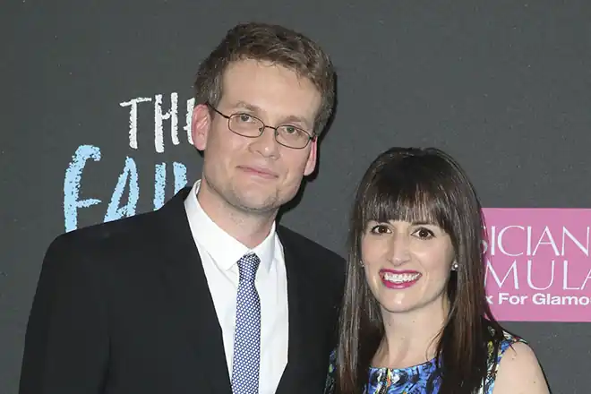

24.08.1977
Американський письменник, автор книг для підлітків, відеоблогер і творець освітніх онлайн відео. Найбільш відомий своїми романами "Винні зірки" (2012) і "В пошуках Аляски" (2005).
Джон Грін народився в Індіанаполісі, Індіана, в сім'ї Майка і Сідні Грін. Лише через три тижні після його народження, його сім'я почала переїжджати з місця на місце і, врешті-решт, осіла в Орландо, Флорида. Джон навчався в Підготовчої школі Хайленд в Орландо (Lake Highland Preparatory School) і Indian Springs School в передмісті Бірмінгема, Алабама. Антураж останньої він використовував як головне місце дії в романі "У пошуках Аляски". У 2000 році Грін закінчив Кеньон-Коледж з подвійним дипломом з англійської літератури і релігієзнавства. Він часто згадував про те, як його задирали, і яким нещасним він себе відчував, будучи підлітком. Після закінчення коледжу Грін провів п'ять місяців, працюючи в якості студента капелана в дитячій лікарні. У той час він мав намір стати єпископальним священиком, але робота з дітьми, що страждають від важких захворювань, надихнула його стати письменником, і згодом створити роман "Винні зірки" . Протягом декількох років Грін жив в Чикаго, де працював в якості помічника редактора в журналі Booklist, писав рецензії, і складав "У пошуках Аляски". За цей час він написав рецензії до сотням книг, особливо до белетристики. Він також рецензував книги для "Нью-Йорк Таймс" і робив оригінальні радіо-есе для громадської радіостанції Чикаго. Пізніше Грін протягом двох років жив у Нью-Йорку, поки його дружина Сара вчилася в аспірантурі. Цікаві факти з життя Джон великий фанат футболу і, зокрема, команди Ліверпуль з Англійської Прем'єр-ліги. У його дружини на Youtube є прізвисько — "Йеті" — оскільки вона ніколи не з'являється в кадрі. Назва роману Джона Гріна — відсилання до рядку з трагедії Шекспіра "Юлій Цезар", в оригіналі звучить так: The fault, dear Brutus, is not in our stars, But in ourselves, that we are underlings. Чи не зірки, милий Брут, а самі ми Винні в тому, що зробилися рабами. На написання книги "Винні зірки" Джона Гріна підштовхнула історія дівчини на ім'я Естер Ерл. Хоча Естер не є прототипом конкретного персонажа книги, автор зазначає, що "наша дружба і радість, яку вона відчувала від цієї дружби, дуже надихали мене". У 2006 році дівчині поставили діагноз "рак щитовидної залози з метастазами", а в 2010 році Естер Грейс Ерл померла у віці 16 років. Нагороди письменника Michael L. Printz Award (2006) Edgar Allan Poe Award (2009) Corine Literature Prize (2010) New York Times Best Seller (2012) Indiana Authors Award (2012) Children's Choice Book Awards (2013) Los Angeles Times Book Prize (2013) Бібліографія Романи: У пошуках Аляски [Looking for Alaska] (2005) Численні Катерини [An Abundance of Katherines] (2006) Паперові міста [Paper Towns] (2008) Will Grayson, Will grayson (в співавторстві з Девідом Левитаном) (2010) Винні зірки [The Fault in Our Stars] (2012) Розповіді: The Approximate Cost of Loving Caroline (2006) (збірник Twice Told: Original Stories Inspired by Original Artwork) The Great American Morp (2007) (збірник 21 Proms) Нехай йде сніг [A Cheertastic Christmas Miracle (збірник Let it Snow: Three Holiday Romances] (2008) Freak the Geek (2009) (збірник Geektastic: Stories from the Nerd Herd) Thisisnottom (2009) (інтерактивний розповідь, написаний загадками) Zombicorns (2010) (онлайн розповідь) Екранізації творів, театральні постановки Винні зірки (2014 року) Паперові міста (2015) У пошуках Аляски (2016)